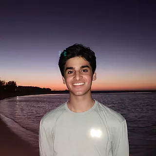
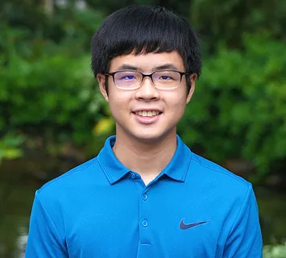
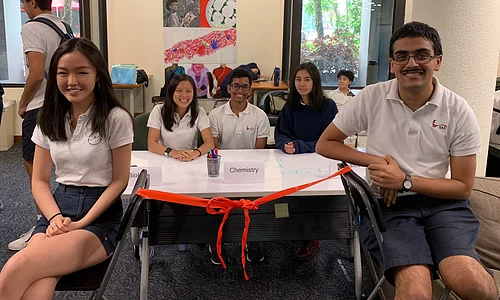

3 senior officers, 2 junior officers, 3 ministers
The SNHS officer team launched the Tutoring Center, Academic Council, 3 minister positions, and review sessions.
The Covid-19 pandemic later forced all review sessions to move to Zoom.
Diana is a senior in her sixth year at SAS. Within science she is most passionate about chemistry and physics, but also actively pursues mathematics, as the president of Mu Alpha Theta, and computer science, through Spacelab and her internship at a data analytics company. Diana also has an insane amount of fun playing the clarinet, posting on her food blog, listening to Queen, watching We Bare Bears, and spending time with friends, family and of course, her EAA Science Buddies. You’ll most likely find her at the nearest science center or Starbucks, but she can also be contacted at yuan46429@sas.edu.sg
Rohit Narayanan is a senior officer for the Science National Honor Society. He has taken AP Physics 1, AP Physics 2 and Accelerated Chemistry, AP Chemistry and AP Physics C, and is currently taking AP Biology. He hones his science knowledge from school by applying it to robotics - his main extracurricular activity. Rohit is the captain of the SAS FRC Robotics team and has 9 years of Robotics experience, including 5 years of FLL, 2 years of FTC, 2 years of VexIQ, 2 years of FRC, 2 years of Google Moonbots and 1 year of VRC. He has won 30 regional, national and international awards including the top award in the Northern California Region for FTC and the top award at the World Championship at VexIQ. He’s also a two year participant in the PhysicsBowl competition, and an avid scholar of science history. Other than science, he’s interested in philosophy, politics and poetry.
Ahan was born and raised in Singapore and has been attending SAS for 15 years, since Pre-School. As an avid science enthusiast, he is a member of the SpaceLab 17-18 team, a co-president of Geek Girls, and his favourite movie is Interstellar. At SAS, Ahan has taken Molecular Biology, Accelerated Chemistry, AP Biology, AP Chemistry, AT Computational Physics, and is currently enrolled in AT Environmental Science and AP Physics C for his senior year. Besides his interest in science, Ahan is also a voracious runner, actor, and singer. If he’s not at work on stem cell research at the NanoBioLab at A*STAR, you can catch him watching the latest nature documentary on Netflix or performing somewhere on stage.
Toshiki joined the SAS family in seventh grade after graduating from Nanyang Primary School. He speaks three languages: English, Chinese, and Japanese. His scientific curiosity was first piqued when he visited the Science Center Singapore in third grade, prompting him to win the Best in Science award in fourth grade. As a junior, he enjoys biology, chemistry, computer science, mathematics, and anything related to technology. Other than the Science National Honor Society, he is also actively involved in the Tri-M Music Honor Society and the Chinese Honor Society. During his free time, you would likely find him playing or studying chess online, playing the violin, or playing tennis. In his sophomore year, he was part of the IASAS Chess team and Junior Varsity Tennis team.
Theo began his SAS career as a 6th grader. Although Theo has always been competent in science class, his passion for science certainly developed in his high school chemistry and physics classes. Theo has completed Molecular (Accelerated) Biology, Accelerated Chemistry, and AT Computational Physics. He is enrolled in AP Physics 2 and C and prepares to conclude his final year with AP Chemistry. As a new member of robotics, Theo is currently enjoying his second-year stay in the program. Other than socializing and struggling with homework, he spends his two frees and his spare time practicing the cello, playing frisbee, and listening to Flanagan's iconic Giant Steps solo.

Minister of Biology: Christina Yoh
Minister of Chemistry: Hari Balaji
Minister of Physics: Yoon Kang
Minister of Environmental Science: Michelle Johnson-Wang